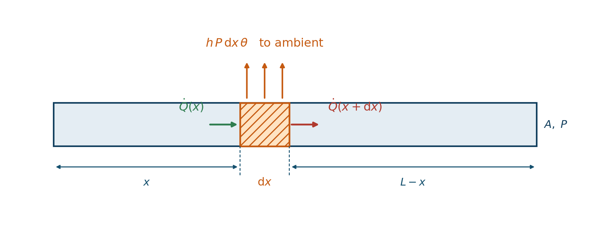
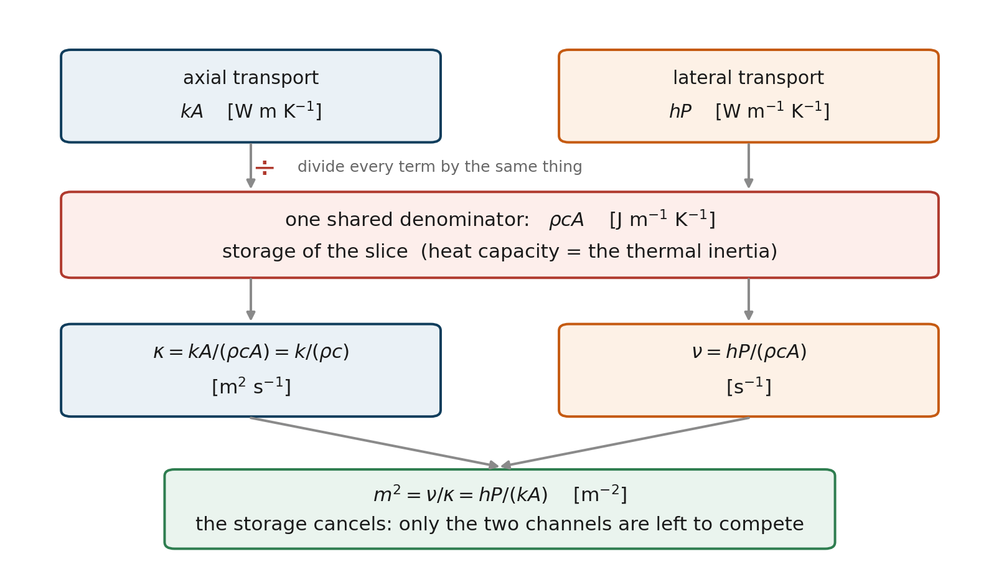

这份文档只回答一个问题：为什么必须除以 ρc，κ 和 ν 到底是怎么冒出来的？答案不是"定义"，而是"除出来"。下面五步就是全文的骨架。
| # | 做什么 | 得到什么 | 单位 |
|---|---|---|---|
| 1 | 对一个厚 dx 的切片记能量账 | ρcA ∂θ/∂t = kA θ″ − hPθ (★) | 三项都是 W/m |
| 2 | 两边同时除以 ρcA | ∂θ/∂t = (kA/ρcA) θ″ − (hP/ρcA) θ | 三项都是 K/s |
| 3 | 给右边两个"商"起名字 | κ ≡ kA/ρcA = k/(ρc)；ν ≡ hP/ρcA | m²/s；1/s |
| 4 | 设 θ ∝ eiωt 解空间部分 | s² = (ν + iω)/κ，s = q + iq′ | s：1/m |
| 5 | 分离实部与虚部 | m² = q² − q′² = ν/κ；κ = ω/(2qq′) | 1/m²；m²/s |
整道题里，材料只提供三样东西，几何只提供两个数。所有后来的 κ、ν、m、q、q′ 都是它们的组合，没有一个新物理。
| 积木 | 符号 | 单位 | 它管什么 |
|---|---|---|---|
| 储热 | ρc | J m⁻³ K⁻¹ | 每升高 1 K，每 m³ 要存多少能量（密度 × 比热） |
| 轴向输运 | k | W m⁻¹ K⁻¹ | 每米温差推动多少热流（傅里叶导热） |
| 侧向输运 | h | W m⁻² K⁻¹ | 每 K 温差、每 m² 表面带走多少功率（牛顿冷却） |
| 几何 | A, P, dx | m², m, m | 截面积、周长、切片厚度 |
Three physical ingredients (storage, axial transport, lateral transport) plus geometry. Everything downstream is a combination of these.
把一片厚 dx、截面 A 的棒升高 dθ，需要吸收的能量是
这里 ρ 和 c 只以乘积出现，物理上无法分开：你需要"多少质量"和"每 kg 每 K 多少焦耳"，两者相乘才是"每 K 每 m³ 多少焦耳"。所以储热系数天然就是 ρc，不是一个可选的分母。
取棒上 x 到 x+dx 之间的一小片。这一小片只有三条能量出路：自己存起来、从左边进右边出、从上表面漏掉。下面按这五步记一遍，全程用瓦特（W）记账。
把五步合成一句话——储热的增加 = 净流入 − 侧面漏出：
每一项都带 dx，所以除以 dx 只是换成"每米棒"的口径：

从 (★) 出发：
两边同时除以 ρcA（它是一个常数，只跟材料和几何有关，与 x、t 无关）：
分子分母的 A 在第一项里直接约掉，第二项里没有可以约的东西：
现在右边只剩下两个"系数"。给它们起名字，就得到课本上的写法：
(★) 式读出来是"热容 × 升温速度 = 净流入 − 漏出"。你想问的问题却是"升温速度等于多少"。要回答这个问题，唯一合法的做法就是把 ρcA 移到右边去——这不是"简化"，这是换个问句。
和牛顿第二定律完全同构：
| 力学 | 热学（本实验） | 共同含义 |
|---|---|---|
| m · dv/dt = F | ρcA · ∂θ/∂t = 净功率 | 惯性 × 变化率 = 驱动 |
| dv/dt = F / m | ∂θ/∂t = 净功率 / ρcA | 变化率 = 驱动 ÷ 惯性 |
| m 越大，同样的力越难加速 | ρcA 越大，同样的功率越难升温 | ρcA 是"热质量" |
代入本实验的数：ρcA = 309.85 J m⁻¹K⁻¹，也就是说每 1 cm 长的棒，升高 1 K 要存 3.10 J。一个 0.4 W 的净功率灌进去（h = 10 时的侧漏量级），升温速度就是 0.4 / 309.85 ≈ 1.3×10⁻³ K/s——秒级几乎看不出来，这正解释了棒的时间尺度为什么是几百秒。
| 项 | 除以 ρcA 之前 | 除以 ρcA 之后 | 单位 |
|---|---|---|---|
| 储热 | ρcA ∂θ/∂t → J m⁻¹K⁻¹·K s⁻¹ | ∂θ/∂t | K/s |
| 轴向 | kA ∂²θ/∂x² → W m K⁻¹·K m⁻² | κ ∂²θ/∂x² | K/s |
| 侧向 | hP θ → W m⁻¹K⁻¹·K | ν θ | K/s |
| 除以之前三项都是 W/m（能量口径）；除以之后三项都是 K/s（温度口径）。同一个方程，两种口径，除 ρcA 就是从"能量账本"翻译成"升温速度"的那一次翻译。 | |||
看 (★) 里的两个系数在实际这根棒上的数值：
这两个数描述的是"这根棒"，不是"这种材料"。你没法拿 0.02139 去和任何文献值比较，也没法在两支不同直径的棒之间做一致性检查。
除完之后情况变了：
三维热方程是每单位体积写的，那里出现的确实是 ρc：
但我们的棒是一维问题。把三维方程对整个截面积分一次（假设截面温度均匀，记 ⟨T⟩ = θ + T环境）：
左边积分给出 ρcA（体元素 dA 积成 A），右边的边界积分给出 hP（周长积分成 P）。所以 ρcA 不是"ρc 的变形"，它是"ρc 在截面上积了一次"的结果；P 也是同一个积分把表面"积"出来的周长。

| 后果 | 为什么 |
|---|---|
| ① 整根棒只有两个未知数 | 方程里只有两条输运通道、一个分母，所以模型恰好两个自由参数（κ、ν）。这也是为什么实验里必须用两个可测量（振幅衰减 q、相位滞后 q′）去定它们——两个未知数需要两个条件，这不是巧合，是结构决定的。 |
| ② 比值把 ρc 消掉 | ν/κ = (hP/ρcA)/(kA/ρcA) = hP/(kA)。ρc 完全消失，所以 m² 不需要知道密度和比热就能算——这是 §5 数值闭环的基础。 |
| ③ 一个变成材料属性，一个变成率 | κ 去掉了几何（可查表），ν 保留了 P/A（可算 h）。两者分工明确：κ 回答"铝有多快"，ν 回答"这根棒漏得多快"。 |
讲的时候要区分三个层次，问答时才不会被问倒：
| 层次 | 内容 | 能不能质疑 |
|---|---|---|
| 物理 | 能量守恒 + 傅里叶 + 牛顿冷却 | 不能。这是实验的前提假设（一维、截面均匀、k 与 h 为常数）。 |
| 代数 | ÷dx、÷ρcA、约 A、设 eiωt | 不能。纯计算，写错可以检查。 |
| 命名 | 把 k/(ρc) 叫 κ，把 hP/(ρcA) 叫 ν | 只是名字。你可以换个字母，方程不变。 |
这是回答"为什么需要 ρc"最直接的方式——把除法倒过来做一遍，看 ρcA 到底起什么作用。从你们熟悉的速率形式出发：
两边同乘 ρcA：
把 κ、ν 的定义代进去，看 ρcA 把它们分别变成什么：
| 项 | 代入定义 | 结果 | 物理身份 | 单位 |
|---|---|---|---|---|
| ρcA·κ | ρcA · k/(ρc) | kA | 轴向热导 × 长度 | W m K⁻¹ |
| ρcA·ν | ρcA · hP/(ρcA) | hP | 侧向热导（每米） | W m⁻¹K⁻¹ |
于是方程变回 (★)：
| 量 | 正向（÷ρcA） | 反向（×ρcA） | 结论 |
|---|---|---|---|
| ρcA | 2700 × 896 × 1.2808×10⁻⁴ = 309.85 J m⁻¹K⁻¹ | ||
| kA | 0.021389 ÷ 309.85 = 6.903×10⁻⁵ | 309.85 × 6.903×10⁻⁵ = 0.021389 | ✓ 回到 kA |
| hP | 0.40127 ÷ 309.85 = 1.295×10⁻³ | 309.85 × 1.295×10⁻³ = 0.40127 | ✓ 回到 hP |
| k（材料） | k = ρc · κ = 2.4192×10⁶ × 6.903×10⁻⁵ = 167.0 W m⁻¹K⁻¹ | 与手册一致 | |
| h（实验） | h = ν·ρcA / P = 1.295×10⁻³ × 309.85 / 0.040127 = 10.0 W m⁻²K⁻¹ | 与 A4 标称一致 | |
这一点很容易在口试里被追问，务必分清两条箭头：
| 步骤 | 得到 | 依据 |
|---|---|---|
| 对各传感器拟合振幅与相位 | q, q′ | 原始数据（这是唯一的直接测量） |
| 两行代数 | κ = ω/(2qq′)、ν = κ(q² − q′²) | §7 的推导 |
| 反推材料参数（需假设 ρc） | k = ρcκ，h = νρcA/P | §5.1 |
你在自己的笔记里写的是 ∂θ/∂t = κ ∂²θ/∂x² + νθ，这里必须改成减号。
物理上：θ > 0 表示棒比环境热，侧面在向外漏热，θ 必须减小 ⇒ 必须是 −νθ。写成 +νθ，等于说"越热漏得越热"，会指数爆炸。
代数上：这个符号决定 s² 实部的符号。代入 θ = Θ(x)eiωt：
| 时间方程的符号 | 得到 | m² = q² − q′² |
|---|---|---|
| iωΘ = κΘ″ + νΘ | Θ″ = [(iω − ν)/κ]Θ | −ν/κ < 0 ⇒ q < q′（物理上不可能） |
| iωΘ = κΘ″ − νΘ | Θ″ = [(iω + ν)/κ]Θ | +ν/κ > 0 ⇒ q > q′（正确） |
现在把 §3 的成果和课程公式接起来。从速率形式出发，六步到底：
同一套代数，只是第 1 步用 (★) 而不是速率形式，会得到：
物理完全一样，只是每个式子都多背一个 ρcA。对比一下就明白除 ρcA 的好处：
| 不除 ρcA（能量口径） | 除了 ρcA（速率口径） | |
|---|---|---|
| 两个未知数 | kA、hP（含几何） | κ、ν（κ 不含几何） |
| κ 的表达式 | kA = ωρcA/(2qq′) | κ = ω/(2qq′) |
| 能否查表核对 | 不能（含 A） | 能（铝 κ ≈ 6.9×10⁻⁵） |
| 能否与 ω 直接比 | 不能（单位 W m/K） | 能（ν 与 ω 都是 1/s） |
你会发现"分离出状态变量的变化率、把剩下的系数读成'输运 ÷ 惯性'"是所有演化方程的同一个动作。κ = k/(ρc) 不是热学特有的技巧，而是这一族定律的统一结构。
| 定律 | 原始形式（惯性 × 变化率 = 驱动） | 除以惯性后 | 系数是什么 |
|---|---|---|---|
| 牛顿 | m · dv/dt = F | dv/dt = (1/m) F | 1/惯性 |
| 薛定谔 | iℏ · ∂ψ/∂t = Ĥψ | ∂ψ/∂t = −(i/ℏ) Ĥψ | 1/ℏ |
| 菲克扩散 | ∂c/∂t = D ∇²c（D 已含容量） | 同左 | 迁移率 / 容量 |
| 热扩散（本文） | ρcA ∂θ/∂t = kA ∂²θ/∂x² − hPθ | ∂θ/∂t = κ ∂²θ/∂x² − νθ | κ = 输运 / 储热 |
有人会觉得"除以导热的系数更自然"。做一遍看看：
这一步其实很有价值，因为稳态极限（∂θ/∂t = 0）直接把左边删掉，就剩下
这正是 Module 7 的稳态鳍片方程。所以两条路都合法，只是分工不同：
| 除以什么 | 时间前面的系数 | 读出来的是什么 |
|---|---|---|
| ÷ 储热 ρcA | 1 | 时间是自变量；系数是"每秒能摊开多少面积" ⇒ 速率，能和 ω 相加 |
| ÷ 导热 kA | 1/κ | 空间是自变量；系数是"扩散有多难" ⇒ 困难度，稳态时正好删掉 |
下面这张表把本文所有符号串成一条链：左边是输入，中间是"除 ρcA"，右边是输出。
| 量 | 符号 | 数值 | 单位 | 来历 |
|---|---|---|---|---|
| 密度 × 比热 | ρc | 2.4192×10⁶ | J m⁻³K⁻¹ | 2700 × 896（铝） |
| 截面 / 周长 | A, P | 1.2808e-4 / 0.040127 | m² / m | d = 12.771 mm |
| 导热系数 | k | 167 | W m⁻¹K⁻¹ | 6061-T6 手册 |
| 换热系数 | h | 10 | W m⁻²K⁻¹ | A4 标称 |
| 储热（每米） | ρcA | 309.85 | J m⁻¹K⁻¹ | ρc × A ← 分母 |
| 轴向输运 | kA | 0.021389 | W m K⁻¹ | k × A ← 分子 1 |
| 侧向输运 | hP | 0.40127 | W m⁻¹K⁻¹ | h × P ← 分子 2 |
| ÷ 309.85 → 两个商 | ||||
| 热扩散率 | κ | 6.903×10⁻⁵ | m² s⁻¹ | kA/ρcA = k/ρc |
| 侧漏率 | ν | 1.295×10⁻³ | s⁻¹ | hP/ρcA |
| 侧漏时间常数 | 1/ν | 772 | s | 1/ν |
| 再取比值 → 分母消掉 | ||||
| 翅片参数平方 | m² = ν/κ | 18.76 | m⁻² | = hP/(kA)，与 ρc 无关 |
| 翅片参数 | m | 4.331 | m⁻¹ | √(m²) |
| 平均衰减长度 | 1/m | 0.2309（23.1 cm） | m | = √(κ/ν) |
| 路线 | 式子 | m² [m⁻²] | 说明 |
|---|---|---|---|
| ① 材料 / 几何正算 | hP/(kA) | 18.76 | 用 h = 10、k = 167 |
| ② 周期法实测（200 s） | ν/κ = q² − q′² | 18.19 | 五周期复核，κ = 6.665×10⁻⁵ |
| ③ 稳态鳍片拟合（M7） | m² | 23.3 | m = 4.83 ± 0.07 m⁻¹ |
符号 m 是斜体字母（decay constant），单位 m 是正体（metre）。"m²" 读作"em squared"，单位是 m⁻²，不是"平方米"。
| 量 | 单位 | 怎么来的 |
|---|---|---|
| m | m⁻¹ | √(hP/kA)：[W m⁻¹K⁻¹ ÷ (W m K⁻¹)]1/2 = (m⁻²)1/2 |
| m² | m⁻² | hP/(kA)：W m⁻¹K⁻¹ ÷ W m K⁻¹ |
| 1/m | m | 衰减长度（本实验 ≈ 23 cm） |
| mL | 无量纲 | m⁻¹ × m；"棒长相当于几个衰减长度" |
差别来自驱动量不同，这是真实物理，不是记账习惯：
| 通道 | 本构关系 | 驱动量 | 结果 |
|---|---|---|---|
| 导热 | q″ = −k ∂θ/∂x | 梯度 [K/m] | 带一个 1/m ⇒ κ 多一个 m² |
| 对流 | q″ = h (θ − θ∞) | 温差 [K] | 不带长度 ⇒ ν 只有 1/s |
所以把两者都除以同一个 ρc 之后，两者的单位就相差一个长度——这一个长度正是"梯度"造出来的：
| 系数 | 表达式 | 单位 |
|---|---|---|
| k/(ρc) | (W m⁻¹K⁻¹)/(J m⁻³K⁻¹) | m² s⁻¹ |
| h/(ρc) | (W m⁻²K⁻¹)/(J m⁻³K⁻¹) | m s⁻¹（注意：只差一个 m） |
| 两者之比 h/k | 1/m | m⁻¹ ← "梯度 vs 温差"的那一个长度 |
| 因子 | 单位 | 物理含义 |
|---|---|---|
| h/k | m⁻¹ | 沿棒走多少米，轴向梯度才能和侧向温差打平 |
| P/A = 4/d | m⁻¹ | 每单位体积有多少侧面积（面 / 体） |
| # | 错误写法 / 说法 | 为什么错，正确是什么 |
|---|---|---|
| 1 | ∂θ/∂t = κ θ″ + νθ | 漏热使 θ 减小 ⇒ 必须是 −νθ（§6）。写错会让 q′ > q。 |
| 2 | ν = hP/(ρc)，忘了 A | 储热是 ρcA（每米棒的），不是 ρc。分子的 P 对应分母的 A，都是"每米棒"的口径。 |
| 3 | m² 读成"平方米" | 它是翅片参数的平方，单位 m⁻²（§11.1）。 |
| 4 | "k 和 h 是实验测出来的" | 直接测的是 q、q′；κ、ν 是拟合量；k、h 是二级反推量，且依赖 ρc（§5.2）。 |
| 5 | κ = k/ρ | 漏了比热 c。κ = k/(ρc)，分母必须是"每 K 每 m³ 的能量"。 |
| 6 | "m² 是新定义的参数" | m² = ν/κ = hP/(kA)，两个已知量的比值，ρc 在其中消掉（§4.1）。 |
| 7 | "除以 ρcA 是为了公式好看" | 它把"每根棒的数字"翻译成"材料属性 + 几何比值"，并让 ν 成为能和 ω 相加的率（§3.5、§7.1）。 |
The primitive statement is an energy balance on a slice: rho c A theta-dot equals k A theta-double-prime minus h P theta, all three in watts per metre, with rho c A the coefficient of the time derivative — the thermal inertia. Because we want the rate of change of theta itself, we divide by rho c A; the two remaining coefficients are what we name kappa and nu. They are not definitions, they are quotients.
| 步 | 操作 | 结果 |
|---|---|---|
| 1 | ÷ dx | (★) 本身就是"每米棒"口径 |
| 2 | ÷ ρcA | ∂θ/∂t = κ θ″ − νθ，其中 κ = k/(ρc)、ν = hP/(ρcA) |
| 3 | 设 θ = Θ(x)eiωt | iωΘ = κΘ″ − νΘ |
| 4 | 整理 | Θ″ = s²Θ，s² = (ν + iω)/κ |
| 5 | s = q + iq′，分离实虚部 | κ = ω/(2qq′)、ν = κ(q² − q′²)、m² = q² − q′² = ν/κ |
| 关系 | 单位 | 一句话含义 |
|---|---|---|
| κ = k/(ρc) | m² s⁻¹ | 输运 ÷ 储热（轴向）；A 已约掉 ⇒ 材料属性 |
| ν = hP/(ρcA) | s⁻¹ | 输运 ÷ 储热（侧向）；含 P/A = 4/d ⇒ 属于这根棒 |
| m² = ν/κ = hP/(kA) | m⁻² | 两个通道之比；ρc 消掉 |
| m = √(hP/kA) | m⁻¹ | 翅片参数（Module 7 的同一个 m） |
| 1/m = √(κ/ν) | m | 扩散与漏热打平的长度（≈ 23 cm） |
| κ = ω/(2qq′) | m² s⁻¹ | 从周期温度场直接测出的热扩散率 |